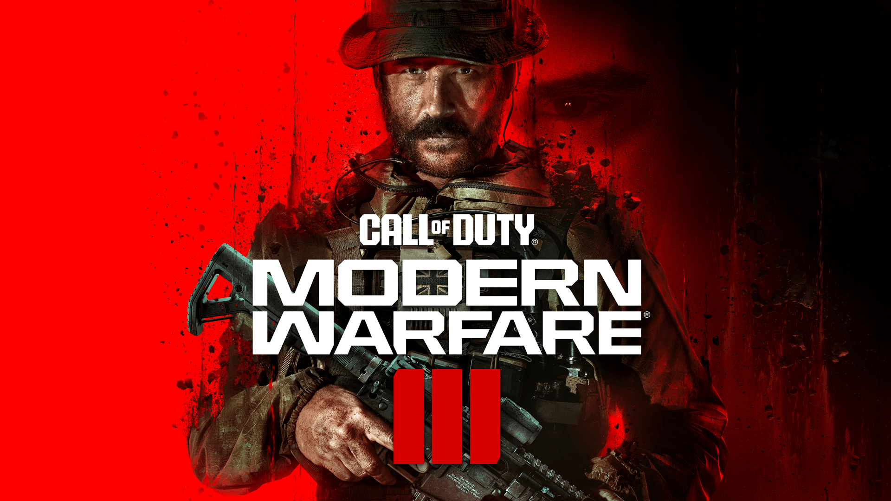

Call of duty

ADAPTARSE O MORIR EN LA LUCHA CONTRA LA AMENAZA DEFINITIVA
En la secuela directa del exitoso juego Call of Duty®: Modern Warfare® II,
el capitán Price y la Fuerza operativa 141 se enfrentan a la amenaza definitiva.
El criminal de guerra ultranacionalista Vladimir Makarov extiende su alcance por
todo el mundo, obligando a la Fuerza operativa 141 a luchar como nunca antes.
ES HORA DE SALDAR VIEJAS CUENTAS Y EMPEZAR DE NUEVO
Modern Warfare® III celebra el 20º aniversario de Call
of Duty® con una de las mejores colecciones de mapas Multijugador
jamás reunidas, tanto favoritos de los fans como nuevos. Incluye
los 16 mapas de lanzamiento original de Modern Warfare® 2 (2009),
modernizados con nuevos modos y características de juego, así como
nuevos mapas 6c6 principales.
NUEVOS ZOMBIS EN MUNDO ABIERTO
Por primera vez, forma equipo con otros pelotones para sobrevivir y luchar
contra enormes hordas de no muertos en el mapa de Call of Duty® Zombis más
grande de la historia. Modern Warfare® Zombis (MWZ) cuenta una nueva historia
de Zombis de Treyarch con misiones, características principales de Zombis y
secretos por descubrir.